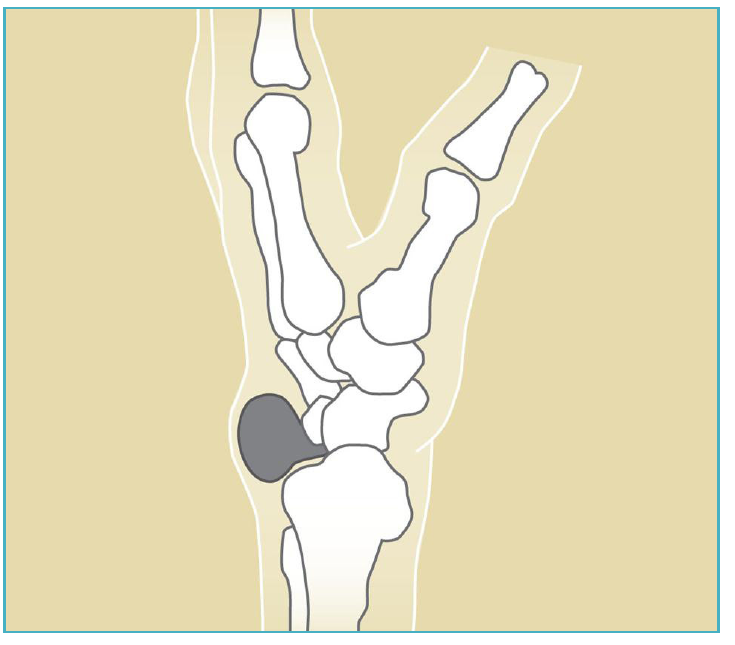
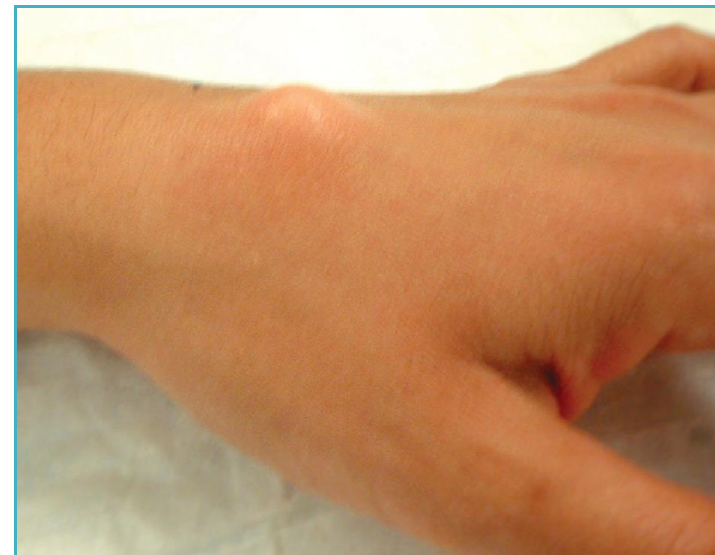
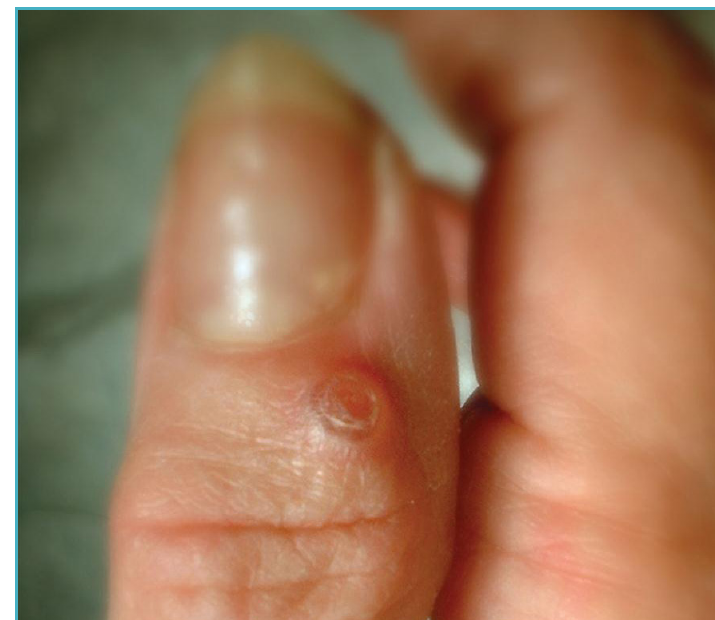

Condición
Quiste Ganglionar
Un bulto benigno lleno de líquido en la muñeca o mano. Inofensivo, a menudo aparece y desaparece, y solo se trata si le molesta.

Illustration © American Society for Surgery of the Hand

Illustration © American Society for Surgery of the Hand
¿Qué es un quiste ganglionar?
Un quiste ganglionar es un saco pequeño de líquido espeso y transparente que surge de una articulación o de la vaina de un tendón. Son los bultos más comunes en la mano y la muñeca. No son cáncer y no pueden convertirse en cáncer. Muchos ganglios cambian de tamaño de una semana a otra y algunos desaparecen solos.
Síntomas comunes
- Un bulto firme y liso en la muñeca o la mano, generalmente del tamaño de un guisante o una uva
- Ubicaciones más comunes: la parte de atrás de la muñeca, el lado de la palma de la muñeca en la base del pulgar, la palma en la base de un dedo, y justo detrás de la uña
- Molestia leve o presión, especialmente al agarrar con fuerza o empujar con la muñeca
- Tamaño que cambia con la actividad
- A menudo ningún dolor

Illustration © American Society for Surgery of the Hand
¿Por qué ocurre?
Los quistes ganglionares se forman cuando el líquido articular se filtra por una pequeña abertura en la cápsula articular o la vaina del tendón y forma un saco de una sola vía. El gatillo exacto generalmente es desconocido. Son más comunes en adultos entre 20 y 40 años, pero pueden ocurrir a cualquier edad. Una lesión previa de muñeca o desgaste de una articulación cercana puede contribuir.
Opciones de tratamiento
Tratamiento no quirúrgico
- Observación. Si el quiste no duele y no le molesta, no se necesita tratamiento. Muchos se resuelven por su cuenta.
- Aspiración. Se usa una aguja para drenar el líquido en la oficina. Funciona bien para algunos quistes, especialmente los de la parte de atrás de la muñeca. Alrededor de la mitad vuelve después de la aspiración.
- Cambios de actividad y férula. Un período corto de uso de férula puede ayudar si el quiste se inflama con la actividad.
Tratamiento quirúrgico
- Extirpación del quiste. El quiste y su pedículo se retiran a través de una incisión pequeña. Tiene la tasa de recurrencia más baja y se usa cuando el quiste es doloroso, muy grande, o ha vuelto después de aspiración. La cirugía es ambulatoria y la recuperación es sencilla.
Qué esperar en su visita
El Dr. Barrera examinará el bulto y a menudo pasará una luz a través de él para confirmar que está lleno de líquido (una técnica llamada transiluminación). A veces se ordenan radiografías para ver la articulación cercana; la ecografía o resonancia se usa en casos menos típicos. Para la mayoría de los pacientes, la visita termina con la tranquilidad de que el bulto es benigno y con la opción de observar, aspirar, o retirar.
Llámenos si el bulto crece rápidamente, es duro como piedra y fijo, está rojo y caliente, o viene con entumecimiento o debilidad en la mano. Esas características no son típicas de un ganglio y merecen una revisión más detallada.
¿Preguntas?
Llame a su consultorio para preguntas no urgentes:
- NYU Langone Laurelton · 646-501-4950
- NYU Orthopedic, Woodside · 929-429-3222
- NYU Orthopedic, Richmond Hill · 718-206-6923
- Jamaica Hospital Ambulatory Care Center (ACC) · 718-301-0720
Consulte la información de nuestras oficinas para direcciones y números de fax.